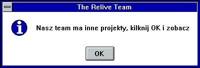

Co to Project CEMeNT?
Ten projekt nie jest mocno modyfikacją interfejsu graficznego systemu Windows.
Jest to mod w stylu Atlas OS, upodobniony do różnych wersji systemu Windows CE
z podobnymi okrojeniami z CE.System bazowany jest na Windows 10 LTSC 2021, i
jest głównie zrobiony pod słabe PC'ty z słabymi parametrami. Projekt głównie
robię pod komputery e-waste, gdzie głównie znajdują cię procesory Intel Celeron,
które nie umią nadąrzyć z nowymi wersjami systemu Windows. Przez to że głównym
celem są słabe komputery, będzie używana minimalna liczba modów (najprawdopodobnie
tylko open shell) i dlatego właśnie nie jest to mod odwzorowywywujący Windowsa CE.

Ten projekt nie jest powiązany z Microsoft Corporation. Windows i logo Windows są własnością Microsoft.